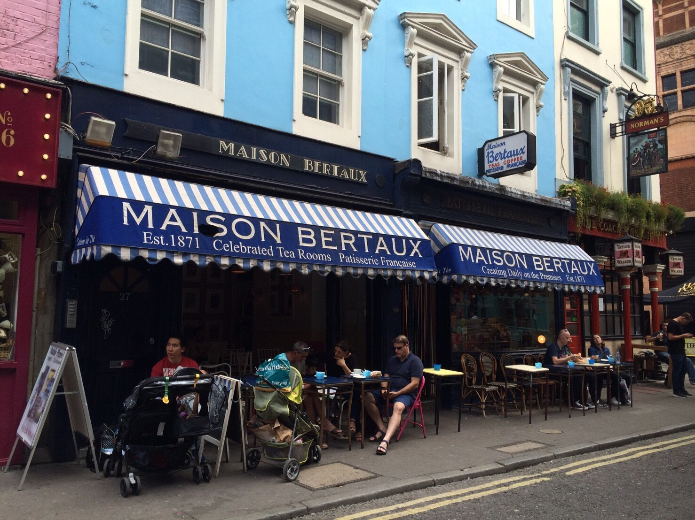
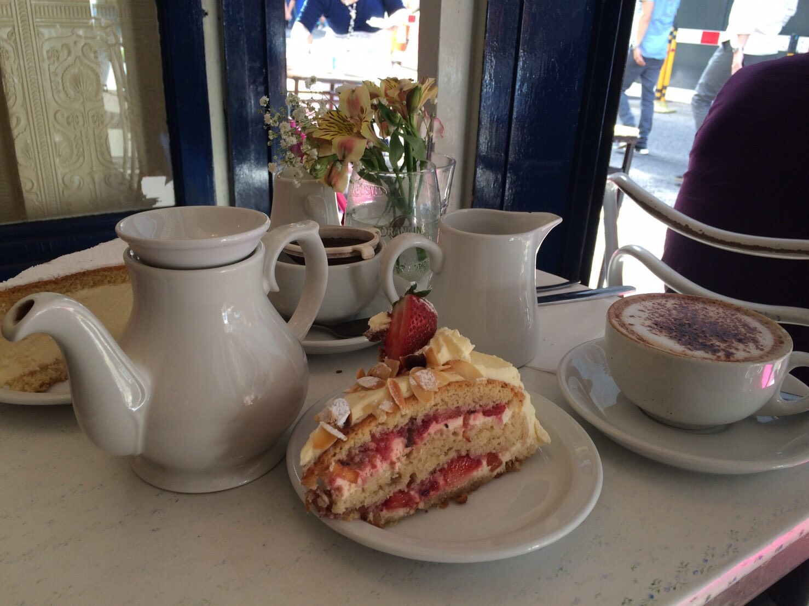

這家甜點店是百年老店，成立於1871年，今年已經146歲了！在店內的蛋糕展示櫃擺滿各式各樣的蛋糕，每一個看起來都很好吃，很難選擇。
最後選擇了莓果起司蛋糕，朋友選了招牌起司蛋糕。不吃還好，一吃真的驚為天人！他的蛋糕口感綿密，甜而不膩，吃完這一大塊還會覺得不夠吃。 我和朋友邊吃蛋糕邊喝茶，看著外頭熙熙攘攘的人，就這樣坐在這間甜點店放空了一個下午。
若是有去英國旅行的捧油們，真心推薦這間甜點店。
地址: 28 Greek Street, Soho, London, W1D 5DD
電話：020 7437 6007